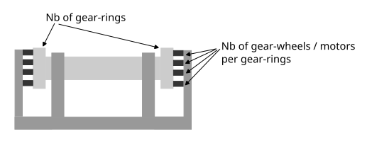
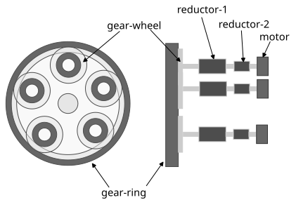
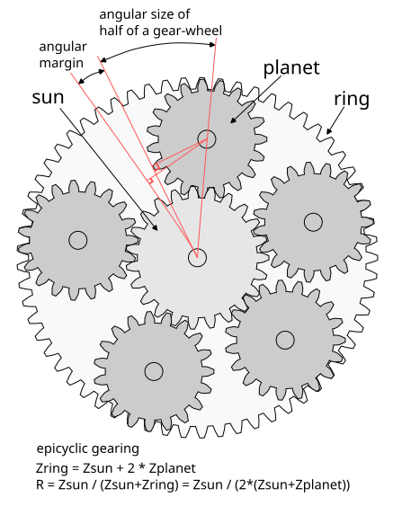

Motorized axis
Parameter description





Numerical application
| Symbol | Parameter | Value | |
|---|---|---|---|
| Motorized axis requirements | |||
| M | Mass of load (kg) | ||
| D1 | Distance axis-load (m) | ||
| Load torque (N.m) | 2943.00 N.m | ||
| Security factor | |||
| Given torque (N.m) | 11772.00 N.m | ||
| Time for half turn (s) | |||
| Time for one turn (s) | 240.00 s | ||
| Axis rotation speed (rpm) | 0.25 rpm | ||
| Power at axis (W) | 308.19 W | ||
| Axis gear-rings and gear-wheels | |||
| Number of gear-rings | |||
| Number of gear-wheels | |||
| Module of gear-wheel (mm) | |||
| Number of teeth of gear-wheel | |||
| Diameter of gear-wheel (mm) | 250.00 mm | ||
| Margin between gear-wheels (%) | |||
| Diameter of gear-ring (mm) | 990.00 mm | ||
| Number of teeth of gear-ring | 95 | ||
| Ratio ring / gear-wheel | 1 : 4.13 | ||
| Gear efficiency (%) | |||
| Torque of gear-wheel (N.m) | 222.66 N.m | ||
| Gear-wheel rotation time (s) | 58.11 s | ||
| Gear-wheel rotation speed (rpm) | 1.03 rpm | ||
| Power at gear-wheel (W) | 24.08 W | ||
| Reductor-1 | |||
| Number of planets of reductor-1 | |||
| Module of epicyclic of reductor-1 (mm) | |||
| Number of teeth of planet-1 | |||
| Diameter of planet-1 (mm) | 50.00 mm | ||
| Diameter of ring of reductor-1 (mm) | 198.00 mm | ||
| Number of teeth of ring-1 | 95 | ||
| Number of teeth of sun-1 | 49 | ||
| Ratio of one stage of reductor-1 | 1 : 2.94 | ||
| Number of stages of reductor-1 | |||
| Ratio of reductor-1 | 1 : 25.38 | ||
| Efficiency of reductor-1 | 51.20 % | ||
| Reductor-1 input torque (N.m) | 17.13 N.m | ||
| Reductor-1 input rotation speed (Hz) | 0.44 Hz | ||
| Reductor-1 input rotation speed (rpm) | 26.21 rpm | ||
| Power at reductor-1 input (W) | 47.03 W | ||
| From Reductor-1 input to axis | |||
| Ratio from reductor-1 input to axis | 1 : 104.83 | ||
| Efficiency from reductor-1 input to axis | 40.96 % | ||
| Reductor-2 | |||
| Number of planets of reductor-2 | |||
| Module of epicyclic of reductor-2 (mm) | |||
| Number of teeth of planet-2 | |||
| Diameter of planet-2 (mm) | 25.00 mm | ||
| Diameter of ring of reductor-2 (mm) | 99.00 mm | ||
| Number of teeth of ring-2 | 95 | ||
| Number of teeth of sun-2 | 49 | ||
| Ratio of one stage of reductor-2 | 1 : 2.94 | ||
| Number of stages of reductor-2 | |||
| Ratio of reductor-2 | 1 : 644.17 | ||
| Efficiency of reductor-2 | 26.21 % | ||
| Reductor-2 input torque (N.m) | 0.10 N.m | ||
| Reductor-2 input rotation speed (Hz) | 281.37 Hz | ||
| Reductor-2 input rotation speed (rpm) | 16882.37 rpm | ||
| Power at reductor-2 input (W) | 179.39 W | ||
| From Reductor-2 input to axis | |||
| Ratio from reductor-2 input to axis | 1 : 67529.49 | ||
| Efficiency from reductor-2 input to axis | 10.74 % | ||
| Electrical reluctance motor | |||
| Force on one shuttle (N) | |||
| Shuttle diameter (mm) | 338.23 mm |